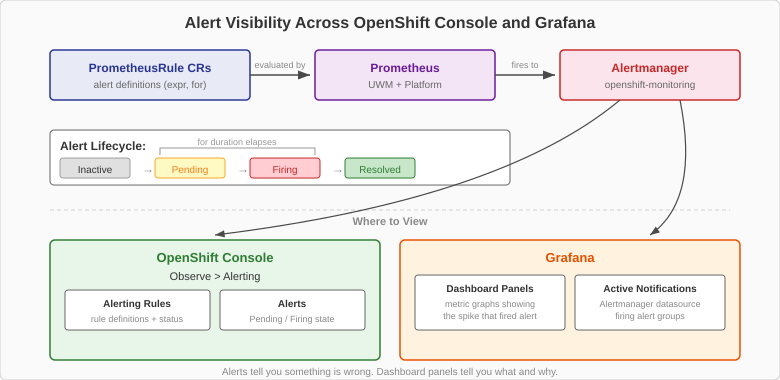

Alert Design for AI Serving
Knowing how to write a PrometheusRule is not the same as knowing what to alert on.
The previous page covered the mechanics — YAML structure, the for field, namespace enforcement.
This page covers the strategy: which metrics deserve alerts, what thresholds to use, and how alerts connect to the dashboards you built in the Dashboards chapter.

Two Categories of Alerts
The three observability layers from the foundations chapter map directly to two alert categories. Layer 2 (platform infrastructure) produces infrastructure alerts. Layer 3 (application telemetry) produces application alerts. You need both.
Infrastructure Alerts: GPU Health (Layer 2)
Infrastructure alerts tell you about the hardware. They fire regardless of what application is running on the GPU.
| Alert | Expression | for | Severity | Action When It Fires |
|---|---|---|---|---|
HighGPUUtilization |
|
2m |
warning |
Check traffic volume, consider scaling replicas |
GPUTemperatureHigh |
|
1m |
critical |
Check datacenter cooling, reduce workload immediately |
HighGPUUtilization uses a 2-minute stabilization window because GPU utilization naturally spikes during inference requests. A single large prompt can push utilization above 80% for several seconds. The 2-minute window filters out these per-request spikes and fires only when the GPU is sustained above the threshold — indicating the model server is approaching saturation.
GPUTemperatureHigh is the only critical alert in our lab.
GPU overheating can cause thermal throttling (reduced clock speeds and degraded inference performance) and in extreme cases hardware damage.
The 1-minute stabilization window is shorter because temperature problems are genuine emergencies — you want to know quickly.
| The 70C threshold is conservative for NVIDIA GPUs, which can operate safely up to 83-90C depending on the model. In a production environment, you would adjust this threshold based on your specific GPU hardware and datacenter cooling capacity. |
Application Alerts: Inference SLOs (Layer 3)
Application alerts tell you about the user experience. They are specific to the vLLM model server and the metrics it exposes.
| Alert | Expression | for | Severity | Action When It Fires |
|---|---|---|---|---|
InferenceQueueBacklog |
|
1m |
warning |
Scale replicas or throttle incoming traffic |
HighTTFTLatency |
|
2m |
warning |
Investigate GPU saturation or excessive prompt lengths |
KVCacheHighUsage |
|
1m |
warning |
Reduce |
InferenceQueueBacklog is the most direct measure of user impact. When requests are waiting in the queue, users are experiencing delay beyond the model’s actual inference time. A model with 200 requests running and 0 waiting is healthy — the GPU is efficiently utilized. A model with 200 running and 50 waiting is saturated — users are suffering.
HighTTFTLatency alerts on the p95 time to first token. This is what users perceive as "how long until the model starts responding." The p95 threshold means 1 in 20 requests is slower than 1 second — a meaningful fraction of users are having a poor experience.
KVCacheHighUsage is an early warning signal. When the KV cache fills up, vLLM cannot admit new requests for processing, and they begin queuing. Alerting at 70% gives you time to act before the cache reaches 100% and queue backlog alerts begin firing.
| Notice how KVCacheHighUsage is designed as an early warning that fires before InferenceQueueBacklog. The KV cache fills up first, then requests start queuing. If you only alert on queue backlog, you find out about the problem after users are already affected. If you also alert on KV cache usage, you get advance notice. |
Why Both Categories Matter
Infrastructure and application alerts can tell opposite stories. Consider three scenarios:
Scenario A: GPU Busy, No User Impact
-
GPU utilization at 95% — HighGPUUtilization fires
-
Requests waiting: 0 — No application alert fires
-
Diagnosis: HEALTHY — the GPU is efficiently utilized with no users waiting
-
Action: None — this is the ideal state for cost efficiency
Scenario B: GPU Idle, Users Suffering
-
GPU utilization at 40% — No infrastructure alert fires
-
Requests waiting: 10 — InferenceQueueBacklog fires
-
Diagnosis: UNHEALTHY — the bottleneck is not the GPU
-
Action: Investigate CPU, network, or KV cache as the real bottleneck
Scenario C: GPU Saturated, Users Affected
-
GPU utilization at 95% — HighGPUUtilization fires
-
Requests waiting: 15, KV cache at 93% — InferenceQueueBacklog and KVCacheHighUsage fire
-
Diagnosis: GPU is saturated AND users are affected
-
Action: Scale out (add GPU replicas) or shed load
If you only had infrastructure alerts, you would alert on Scenario A (wasting the on-call engineer’s time) and miss Scenario B (where users are actually suffering). If you only had application alerts, you would catch B and C but miss early warning signs from infrastructure trends. You need both categories to understand what is happening and why.
The Alert-Dashboard Connection
Alerts and dashboards are designed to work as a pair. When an alert fires, the first thing the on-call engineer does is open the relevant dashboard. This means your alert thresholds and your dashboard panels must use the same metrics and the same thresholds.
The Investigation Workflow
The typical response to a firing alert follows this sequence:
-
Alert fires — The engineer sees "HighGPUUtilization" in the OpenShift Console or receives a Slack or PagerDuty notification
-
Open GPU Health dashboard — The engineer sees GPU at 92%, temperature at 68C (safe), power at 65W. Conclusion: GPU is busy but hardware is OK
-
Open vLLM Inference dashboard — The engineer sees 15 requests waiting, KV cache at 88%, TTFT p95 at 5 seconds. Conclusion: a traffic spike is saturating the model
-
Take action — Scale up replicas (if GPU nodes have capacity), implement request rate limiting, or reduce
max_model_lento allow more concurrent requests
Threshold-Dashboard Alignment
Each alert threshold matches a threshold line on the corresponding Grafana dashboard:
| Alert | Threshold | Dashboard | Visual Indicator |
|---|---|---|---|
HighGPUUtilization |
80% |
GPU Health |
Orange threshold line at 80% on the utilization panel |
GPUTemperatureHigh |
70C |
GPU Health |
Red threshold line at 70C on the temperature panel |
InferenceQueueBacklog |
5 requests |
vLLM Inference |
Red zone at 5 on the requests waiting panel |
KVCacheHighUsage |
70% |
vLLM Inference |
Orange threshold line at 0.7 on the KV cache panel |
HighTTFTLatency |
1 second |
vLLM Inference |
Red threshold line at 1s on the TTFT panel |
When the alert fires, the engineer opens the dashboard and immediately sees the metric crossing the same threshold line. There is no guessing about "what threshold did this alert use?" — it is visually obvious.
| If you change an alert threshold, update the corresponding dashboard panel threshold at the same time. An alert that fires at 80% GPU utilization while the dashboard shows a red line at 95% creates confusion during incident response. |
Beyond the Lab: AlertmanagerConfig
In the exercises for this chapter, you will observe alerts in the OpenShift Console. In production, you would want alerts to reach engineers wherever they are — Slack, PagerDuty, email, or Microsoft Teams.
This is the role of Alertmanager, which is already running in the openshift-monitoring namespace.
Alertmanager performs four functions:
-
Receives firing alerts from Prometheus
-
Groups related alerts so you do not get 50 separate notifications for one incident
-
Routes alerts based on labels (severity, team, namespace) to the right notification channel
-
Delivers notifications to configured receivers (Slack webhook, PagerDuty API key, email SMTP)
For user-namespace alerts, configuration is done via AlertmanagerConfig custom resources.
Here is an example for reference — this is not part of the lab exercises:
apiVersion: monitoring.coreos.com/v1beta1
kind: AlertmanagerConfig
metadata:
name: slack-notifications
namespace: llm-serving
spec:
route:
receiver: slack-channel
matchers:
- name: severity
value: warning
receivers:
- name: slack-channel
slackConfigs:
- channel: "#ai-platform-alerts"
apiURL:
name: slack-webhook-secret
key: urlThis example routes all warning alerts from the llm-serving namespace to a Slack channel.
You would create a separate route for critical alerts to send them to PagerDuty for immediate paging.
| AlertmanagerConfig is not part of the lab exercises because it requires a Slack workspace or PagerDuty account. However, it is the natural next step after this course. The path from "alert fires" to "human gets notified" runs through Alertmanager, and configuring it is essential for production use. |